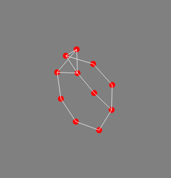

Force-directed graph with D3js in Clojurescript
- Setup
- Test data
- Empty Canvas
- Let's draw some nodes and edges
- Start the engine d3.forceSimulation
- Making it draggable
Recently, I stumbled upon opensecrets.org where I could get a hold of raw data on US Senate and House campaign contributions. Full disclosure, I don't consider myself very political, nor do I know the interworkings of our political system, but I thought why not graph the contribution data in d3js.
I have done a couple d3js projects in the past in Javascript, but I really don't want to code in Javascript if I can help it. After some googling, I found rid3, a clojurescript library on top of d3 and Reagent, and decided to give it a spin. I'm going to assume that you already have a working knowledge of reagent and re-frame.
Setup
Add two additional dependencies to your project.clj. We're going to using re-frame for our state management.
(defproject viz "0.1.0-SNAPSHOT"
:dependencies [[org.clojure/clojure "1.8.0"]
[org.clojure/clojurescript "1.9.908"]
[reagent "0.7.0"]
[re-frame "0.10.2"] ;; <-- add this
[rid3 "0.2.0"]] ;; <-- add this
...
)
Test data
Apparently, there's a lot of data around campaign contributions. Instead of dealing with a large data set right off the bat while trying to get a d3 force-directed graph working in clojurescript, I decided it'd be wise to create a small data sample in order to iterate quickly.
;; in db.cljs
(def default-db
{:name "re-frame name"
:test-data {:dataset
{:nodes
[{ :id "mammal" :group 0 :label "Mammals" :level 1 }
{ :id "dog" :group 0 :label "Dogs" :level 2 }
{ :id "cat" :group 0 :label "Cats" :level 2 }
{ :id "fox" :group 0 :label "Foxes" :level 2 }
{ :id "elk" :group 0 :label "Elk" :level 2 }
{ :id "insect" :group 1 :label "Insects" :level 1 }
{ :id "ant" :group 1 :label "Ants" :level 2 }
{ :id "bee" :group 1 :label "Bees" :level 2 }
{ :id "fish" :group 2 :label "Fish" :level 1 }
{ :id "carp" :group 2 :label "Carp" :level 2 }
{ :id "pike" :group 2 :label "Pikes" :level 2 }]
:links
[{ :target "mammal" :source "dog" :strength 0.7 }
{ :target "mammal" :source "cat" :strength 0.7 }
{ :target "mammal" :source "fox" :strength 0.7 }
{ :target "mammal" :source "elk" :strength 0.7 }
{ :target "insect" :source "ant" :strength 0.7 }
{ :target "insect" :source "bee" :strength 0.7 }
{ :target "fish" :source "carp" :strength 0.7 }
{ :target "fish" :source "pike" :strength 0.7 }
{ :target "cat" :source "elk" :strength 0.1 }
{ :target "carp" :source "ant" :strength 0.1 }
{ :target "elk" :source "bee" :strength 0.1 }
{ :target "dog" :source "cat" :strength 0.1 }
{ :target "fox" :source "ant" :strength 0.1 }
{ :target "pike" :source "dog" :strength 0.1 }
]}}})
Now we'll need to subscribe to the data, so we have a way to get a hold of it. In subs.cljs, add a new subscription.
(re-frame/reg-sub
::data
(fn [db]
(:test-data db)))
Empty Canvas
In your views.cljs, create a force-viz reagent component and render it inside the main-panel function. Before rendering force-viz, we'll also need to subscribe to [::subs/data] and pass the result along.
(defn force-viz [ratom]
[rid3/viz
{:id "force"
:ratom ratom
:svg {:did-mount (fn [node ratom]
(-> node
(.attr "width" 1000)
(.attr "height" 1000)
(.style "background-color" "grey")))}
}])
(defn main-panel []
(fn []
(let [data (re-frame/subscribe [::subs/data])]
[force-viz data]
)))
This creates a big empty 1000 x 1000 canvas. Nothing too interesting at the moment. Let's make the width and height dynamically grow with the browser window. This is where reagent really shines. On window resize, we are going to set the new height and width via re-frame. If we have our re-frame dispatch calls set up properly, our previous re-frame subscription will automatically include the updated width and height dimensions.
(re-frame/reg-event-fx
:window-width
(fn [{:keys [db]} [_ width]]
{:db (-> db
(assoc-in [:test-data :width] width))}))
;; I'll leave out the :window-height dispatch.
Inside our init function in core.cljs, invoke re-frame dispatch with the new dimensions.
(set! js/window.onresize (fn []
(re-frame/dispatch [:window-width js/window.innerWidth])
(re-frame/dispatch [:window-height js/window.innerHeight])))
Don't forget to get rid of the hardcoded 1000x1000 pixels.
(defn force-viz [ratom]
[rid3/viz
{:id "force"
:ratom ratom
:svg {:did-mount (fn [node ratom]
(.log js/console "here? " (pr-str @ratom))
(-> node
(.attr "width" (:width @ratom)) <-- change here
(.attr "height" (:height @ratom)) <-- change here
(.style "background-color" "grey")))
}}
:pieces
[
... ;; <--- more on this below
]
])
Now whenever ratom changes, force-viz will be rendered automatically.
Let's draw some nodes and edges
Quick background. There are 4 types of :pieces in rid3: elem, elem-with-data, container, and raw. The order of execution is sequential from top to bottom in :pieces.
In most cases, bootstrapping and updating in d3 are done in the same manner. By default, rid3's did-update lifecycle does the same thing as did-mount unless you tell it otherwise. However, it's worth noting that you have to supply both :did-mount and :did-update for the :raw piece.
;; pieces
[{:kind :elem-with-data
:tag "circle"
:class "node"
:did-mount (fn [node ratom]
(let [r (-> node
(.attr "r" (fn [d]
5))
(.attr "fill" (fn [n]
"red")))]
(re-frame/dispatch-sync [:set-var :node-elems r])))
:prepare-dataset (fn [ratom]
(-> @ratom
(get :dataset)
(get :nodes)
clj->js))}
{:kind :elem-with-data
:tag "line"
:class "link" ;;TODO customize link class
:did-mount (fn [node ratom]
(let [r (-> node
(.attr "stroke-width" 1)
(.attr "stroke" "#E5E5E5")
)]
(re-frame/dispatch-sync [:set-var :link-elems r])))
:prepare-dataset (fn [ratom]
(-> @ratom
(get :dataset)
(get :links)
clj->js))}
]
Instead of dealing with enter(), exit(), and binding the appropriate piece of data to a selected group of svg objects, most of the heavy lifting has already been done for us. We can turn our focus to how we'd like to represent the information. Since we have a nested structure in our data, we'll have to supply :prepare-dataset. Hopefully, you would agree that it's pretty trivial.
In Javascript, one could create a bunch of node and link elements, assign them to their respective variables, and refer to them later when necessary. Spoiler alert, we'll need to somehow pass our newly constructed nodes and links to d3.forceSimulation to kickstart the force directed graph. At first glance, there's no way of doing that with rid3. Don't despair. We can stash the node elements and the link elements via re-frame and get them back later. Hence, the re-frame/dispatch-sync calls. Note that we'll need to call dispatch-sync here and not dispatch since we want to make sure that both node and link elements are done storing before going forward.
The implementation of set-var dispatch is fairly straightforward. For the sake of brevity, you can either implement it on your own or find it in my git repo. (TODO: link implementation here)
Start the engine d3.forceSimulation
If you've already jumped the gun and tried to see what we have so far in the browser, you were probably dispointed to see that all the points are located on the upper left hand corner of the screen. In order to see all the nodes and edges rendered at their appropriate locations, we'll need to pass the previously constructed nodes and link elements into d3.forceSimulation, and we'll achieve this as a :raw piece.
;; pieces
[
;; :elem-with-data for nodes (see the previous code snippet)
...
;; :elem-with-data for links (see the previous code snippet)
...
{:kind :raw
:did-mount sim-did-update
:did-update sim-did-update
}]
(defn sim-did-update [ratom]
(let [sim (-> (js/d3.forceSimulation)
(.force "link" (.id (-> js/d3 .forceLink) (fn [d] (.-id d))))
(.force "charge" (js/d3.forceManyBody))
(.force "center" (js/d3.forceCenter (/ (:width @ratom) 2)
(/ (:height @ratom) 2))))
node-dataset (clj->js (-> @ratom
(get :dataset)
(get :nodes)))
link-dataset (clj->js (-> @ratom
(get :dataset)
(get :links)))
node-elems @(re-frame/subscribe [:get-var :node-elems])
link-elems @(re-frame/subscribe [:get-var :link-elems])
tick-handler (fn []
(-> node-elems
(.attr "cx" (fn [_ idx]
(.-x (get node-dataset idx))))
(.attr "cy" (fn [_ idx]
(.-y (get node-dataset idx)))))
(-> link-elems
(.attr "x1" (fn [_ idx]
(-> (get link-dataset idx)
.-source .-x)))
(.attr "y1" (fn [_ idx]
(-> (get link-dataset idx)
.-source .-y)))
(.attr "x2" (fn [_ idx]
(-> (get link-dataset idx)
.-target .-x)))
(.attr "y2" (fn [_ idx]
(-> (get link-dataset idx)
.-target .-y)))
))
]
;; Add notes to simulation
(-> sim
(.nodes node-dataset)
(.on "tick" tick-handler))
;; Add link force to simulation
(-> sim
(.force "link")
(.links link-dataset))
))
In the beginning of the sim-did-update function, we create a forceSimulation instance. To really get the simulation started, we'll need to add the link force and the nodes to the forceSimulation instance and update the new positions for the node and link elements on every tick.
As alluded to in the earlier section, we'll retrieve the previously created node and link elements from reframe/subscribe. Once again the :get-var subscription should be fairly straightforward to implement. As always, you can take a look the actual code in github.
One thing that I'd like to point out here is that the new coordinates will get assigned to the ratom, namely (-> @ratom (get :dataset) (get :nodes)) and (-> @raom (get :dataset) (get :links)) by the d3 simulation engine. Both node-dataset and link-dataset must be converted to javascript objects or it won't work.

Voila!
Making it draggable
D3 itself already provides a nice API for drag and drop. We'll need to invoke D3's drag api with our node-elements.
(-> node
(.attr "r" (fn [d]
5))
(.attr "fill" (fn [n]
"red"))
(.call (-> js/d3 ;; <------ add this block of code
(.drag)
(.on "start" drag-started)
(.on "drag" dragged)
(.on "end" drag-ended))))
Now we'll need to define drag-started, dragged, and drag-ended.
(defn drag-started [d idx]
(let [sim @(re-frame/subscribe [:get-var :sim])
d (-> sim .nodes (get idx))]
(when (= 0 (-> js/d3 .-event .-active))
(-> sim (.alphaTarget 0.3) (.restart)))
(set! (.-fx d) (.-x d))
(set! (.-fy d) (.-y d))))
(defn dragged [_ idx]
(let [sim @(re-frame/subscribe [:get-var :sim])
d (-> sim .nodes (get idx))]
(set! (.-fx d) (.-x js/d3.event))
(set! (.-fy d) (.-y js/d3.event))))
(defn drag-ended [_ idx]
(let [sim @(re-frame/subscribe [:get-var :sim])
d (-> sim .nodes (get idx))]
(when (= 0 (-> js/d3 .-event .-active))
(-> sim (.alphaTarget 0)))
(set! (.-fx d) nil)
(set! (.-fy d) nil)))